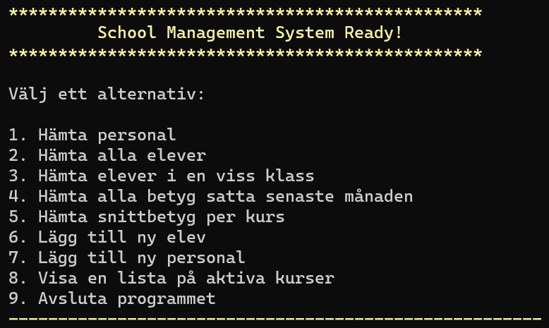
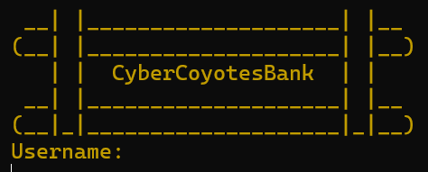
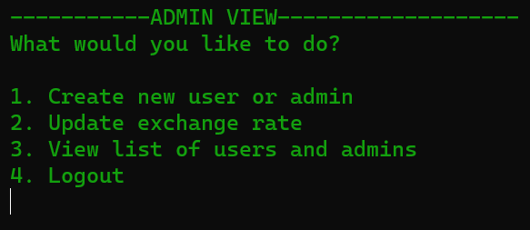
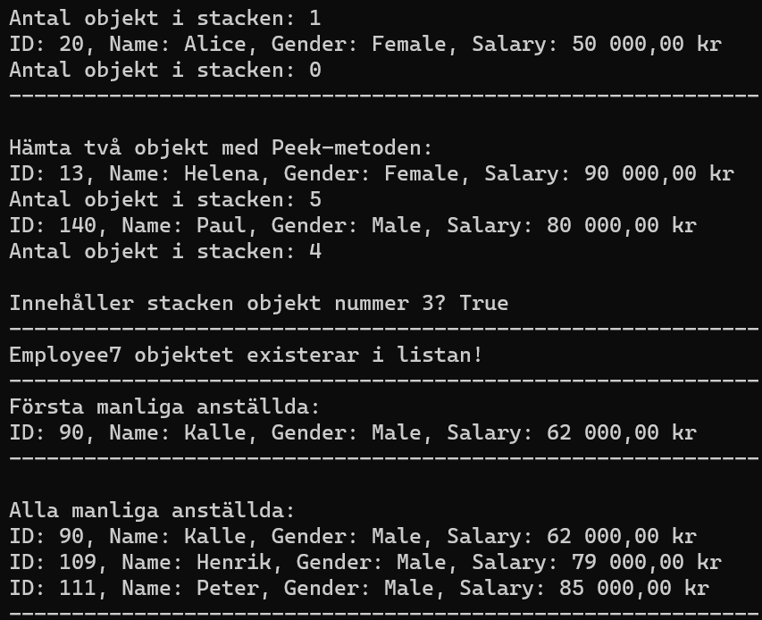

Portfolio
-
Utforska mina studieprojekt
Här nedanför finner du en samling av tre distinkta projekt som jag har utvecklat under mina studier. Dessa projekt representerar olika aspekter av min kunskapsresa och visar på min förmåga att tillämpa de färdigheter och koncept jag har lärt mig. Utforska varje projekt för en djupare förståelse av de utmaningar jag har tacklat och lösningarna jag har skapat. Denna portfolio ger dig en inblick i min utvecklingsresa och de kompetenser jag har förvärvat längs vägen.
Programmering av databaser och SQL
Databasdriven utveckling
I detta projekt skapade jag en databas för en skola som man sedan skulle koppla till Visual Studio.
I databasen skulle man bland annat kunna se information om anställda och elever samt lägga till nya anställda och elever.
När jag arbetade med det projektet så lärde jag mig mycket nytt, som t.ex. hur man kopplar en databas till VS. Samt om SQL Connections och Entity Framework.
Se projektet här!
-
Grupparbete - Objektorienterad programmering med C# och .NET
Objektorienterad programmering
Detta var ett grupprojekt där vi blev indelade i grupper och därifrån skulle vi samarbeta och få ihop ett banksystem.
I detta projekt fick vi bland annat lära oss hur man samarbetar i en och samma fil genom Github.
Jag lärde mig otroligt mycket under detta projekt - väldigt givande och roligt att arbeta i ett team.
Se projektet här!
-
OOP Generiska samlingar
Generiska samlingar
I denna uppgift fick vi lära oss att arbeta med två vanliga generiska typer inom C#, nämligen Stack och List.
Här fick jag lära mig hur man genom Stack och List kan lagra och hantera data.
Användbara verktyg för att organisera och behandla data i programutveckling.
Se projektet här!